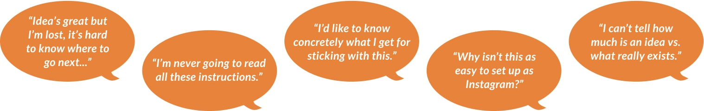

Key Conservation
Local biodiversity & habitat stewardship from any smartphone
Work completed for Key Conservation as part of a two month capstone project.

Connecting experts and locals to rescue habitats
Key Conservation enables an expert community of conservationists to ask any smartphone-carrying individual to infill urgent gaps in support. It empowers average individuals to affect change, and to track the real results of their specific contributions – no PhD required.
Organizations make up the backbone of the Key community. Their active involvement furnishes the content through which individual supporters engage and participate.
There were eleven “pilot” organizations, a number of whom had stalled during the onboarding process. I co-designed the org-side onboarding flow to improve follow-through while maintaining the rigorous vetting process desired by Key Conservation.
I co-designed a streamlined onboarding experience, and flipped the tone from one of suspicion to a presumption of good intention.
My Contributions
Identified the goal beyond the stated need
The project brief stated that more "on-trend" graphics were needed to improve onboarding follow-through. Our initial audit, however, revealed a daunting pre-existing application process spanning five platforms. It also required toggling between devices.
After account authorization and authentication, the onboarding entailed 37 questions over two forms, a document upload, a five-page letter-sized reference pdf, twelve long-format inputs (mobile-only) which auto-formatted to a profile page, and two approval wait times.

We tested the pre-existing onboarding process with six proxy end-users. Five questioned the value of the app with respect to the effort required to apply.
While the called for the addition of graphics, our research pointed to a subtractive approach to redesigning onboarding.
Streamlined the onboarding user flow
Mapping the pre-existing onboarding process helped us determine how we might improve it.

Informed by stakeholder meetings, proxy-user interviews, and analysis of other onboarding flows, we simplified the devices. platforms, questions, and wait times needed by proposing to:
- Make the website mobile-friendly
- Ask only the questions necessary to complete the task at hand (with an explanation)
- Demonstrate value upfront
- Hold remaining questions for post-registration, as brief periodic or milestone-based surveys
- Group multiple screens and forms into four main steps
Rolled out the red carpet
Onboarding thus far had resembled a grant application, with extensive rules, forms, and acceptance tiers. Unlike a grant, however, there is no obvious reward for an organization to participate. Our approach was to demonstrate value early, and to change the tone to one of welcome.


Advocated for accessibility
While redesign / rebranding was declared off the table by the founder, we made the case to improve accessibility by expanding her color palette, and by changing to a typeface compatible with visual hierarchy on mobile devices.


Takeaways
Challenging a client's assumptions
- By basing design recommendations on user-centered research, we were able to make the case for some changes to the visual design to add usability and sophistication.
- Initially asked to make onboarding more flashy to promote follow-through, we found that a subtractive solution was needed, rather than an additive one. As UX Designers, we brought value by asking "why" with an open mind.

Key Conservation
Megan Cromp, Founder
User Experience
Nilpa Jhaveri, UX Designer
Dylan Stephenson, UX Designer
Cameron Alvarado
Blake Goms
Julie Gumerman
Iris Jitomo
Jonathan Solari
Yi Lun Weng
Leadership
Katie Felton, Team Lead
David Monson, UX Manager